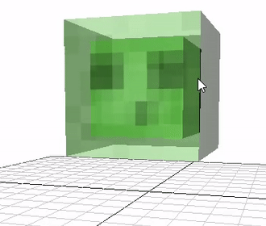
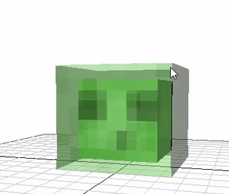
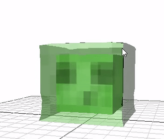
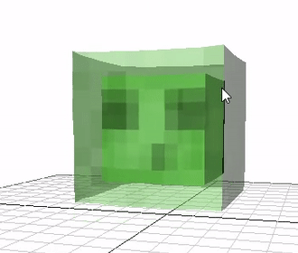
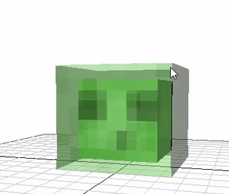
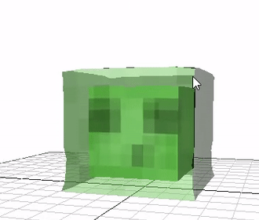
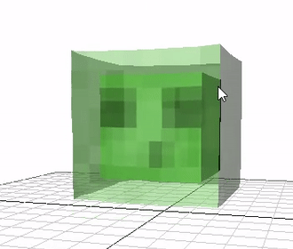

3D Mass-Spring Simulation - Rebecca McFadden
Overview
For my final project, I created a realistic Minecraft Slime using a 3D Mass-Spring simulation. This is an extension of the cloth simulation from Assignment 5. I used textures from the publicly available Minecraft resource pack and proceduraly generated the cube mesh.
The outer cube was rendered by generating triangles connecting all outer particles, computing the normals per triangle, and interpolating the texture coordinates based on the distance to each face's corners. The inner cube uses the same method, just with an inner cube of particles and a different set of interpolated texture coordinates. The particles are rendered as a generic cube mesh with the same texture as the outer cube of the slime.
Simulating the Slime
I started this project by converting the Assignment 5 cloth to be a 3D lattice of mass particles connected by structural,
bending, and shear springs, each with a different stiffness. The springs connecting the outer part of the slime are less stiff than the
inner springs to allow the outer layer to be more "jiggly". I then simulated the forces on each particle at every time step
using the same Implicit Integration method as in A5. I apply an upward collision force if the slime collides with the floor using
the same formula as with the sphere and the cloth but with the normal being (0, 1, 0). The same collision principles apply to
the four walls of the bounding box.
Extra Features
To allow the slime to jump and move with w a s d, I calculated a face normal vector using the positions of the corner particles for
each face. I then apply a force to all of the particles in the direction of the corresponding face normal on keypress. One thing I noticed when
testing this was that the result of a jump or move looked much cleaner if the force was applied across a few time steps, so I implemented a way to
distribute this force across 4 successive update() calls. The extra particles are spawned at collision locations with a likelihood of
20% if the velocity magnitude of that particle exceeds a given threshold.

 





Jumping sequence for the slime
Challenges
One challenge I experienced was that the slime had a tendency to collapse if the collision forces were too great or if it landed on a corner or edge. To counteract this, I added bending springs with a higher stiffness connecting the eight outer corners of the slime. This somewhat (but not entirely) reduced the frequency of collapses, so I attempted to add shear springs to the corners as well. Both of these methods were mildly successful at preventing or reducing collapse, but produced a tent-like artifact at the top of the slime when it collided with the ground that I didn't particularly like. To fix this issue, I tried just applying the edge springs on a keypress to "quick fix" the slime. This ended up exploding the simulation. I settled on a mix of the three methods, applying a less stiff edge bending spring at every time step and really stiff shear springs on a keypress, which yielded better results.
Collapse
Edge bend springs
Bend and shear springs
Simulation explosion